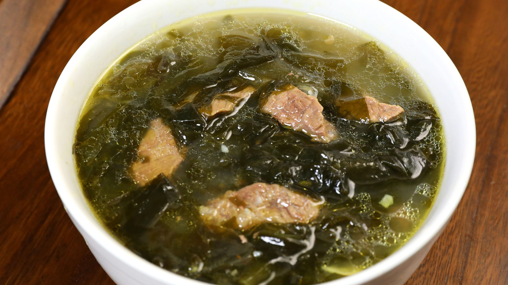

Miyeokguk/Korean Seaweed Soup (미역국)

Description
Miyeokguk is a simple, but very tasty and healthy dish. It's a very common soup, and something Koreans always eat on their birthday.
There are a number of different kinds of seaweed available at a Korean grocery store. Dried miyeok is hard to the touch and it's deep dark green makes it appear almost black. Just make sure the packaging says "miyeok" to avoid the other kinds of seaweed.
Note that Koreans often use a large spoon to measure things instead of a tablespoon measuring spoon. You may want to slightly reduce the amounts of tbsp if using a tablespoon measure or just use one of your larger spoons, such as soup or table spoon.
Ingredients
- 12g Dried miyeok
- 100g Beef brisket (or skirt steak)
- 2tbsp Korean soup sauce (or 1tbsp standard soy sauce)
- 1tbsp minced garlic
- 2tbsp sesame oil
- 1tbsp vegetable oil
- 1.5l water
- A pinch of salt
Steps
- Soak the miyeok in water for 20-30 minutes
- Remove the miyeok from the water and squeeze to remove some of the water.
- Cut the miyeok into 3-4cm long pieces.
- Cut the beef into small bite-sized pieces.
- Heat a pan over medium heat. When the pan comes to temperature, add in sesame oil.
- Add the beef to the pan and fry until the pieces begin to turn brown. Add in the miyeok and fry together.
- Once the miyeok beings to develop a deeper color, add in the water and bring to a boil.
- Boil the soup for at least 30 minutes. Boiling for longer will improve the texture and make for a much better soup. Try boiling your soup for one to one and a half hours. You may need to add more liquid as necessary.
- Add in the minced garlic, and soy sauce, and salt. Taste for seasoning. Once the soup returns to a boil, remove from heat and serve.